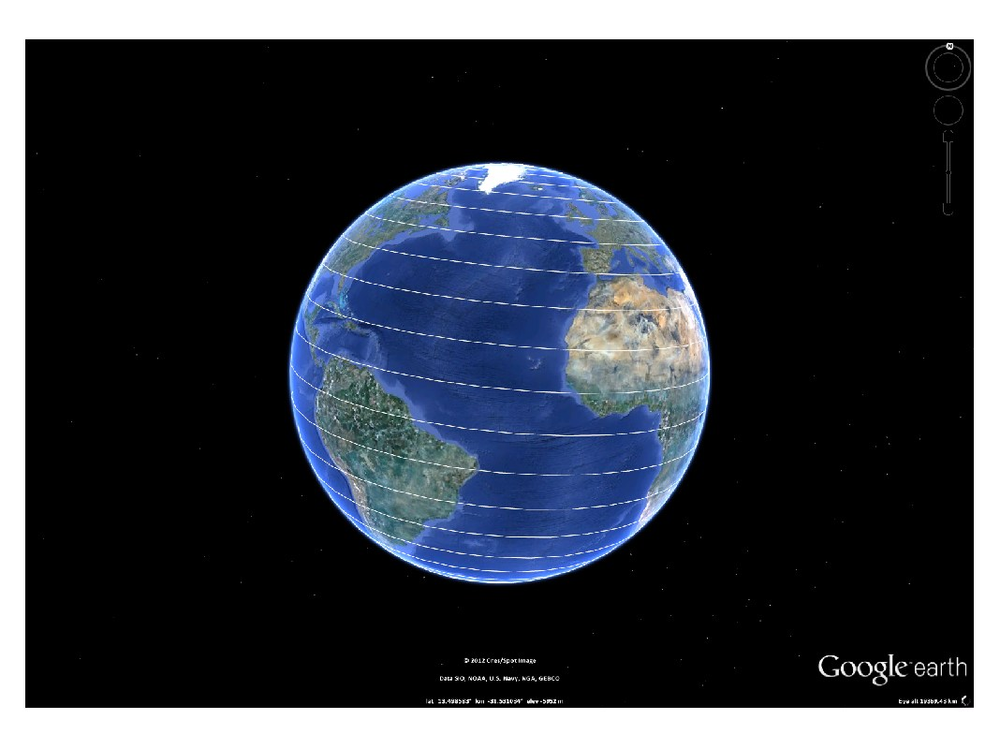

kml.useDegrees
Switch the current kml object to accept angular inputs in degrees.
Contents
Syntax
kml.useDegrees;
Description
kml.useDegrees tells the current kml object to start accepting angular inputs in degrees, such as latitude, longitude, roll, heading and tilt. It must be used before any other plot, as it will not affect plots created before using kml.useDegrees
This is the default behavior.
Example
% Create a new kml object k = kml('my kml file'); % Set Degrees as default unit k.useDegrees; % Plot a simple curve to the kml using degrees as inputs t = linspace(0,360,1000); k.plot(30*t, 90*cosd(t/2)); % Save the kml and open it in Google Earth k.run;
This is the result of running this example:
This file is part of the kml toolbox. Copyright 2012 Rafael Fernandes de Oliveira (rafael@rafael.aero)